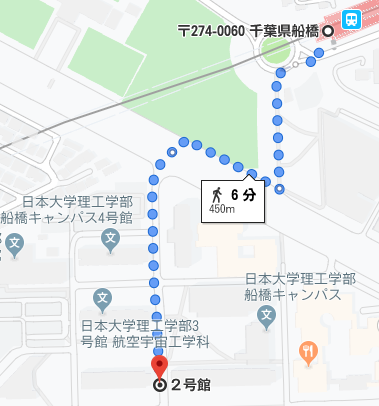

概要
2020年時:日本大学 理工学部 応用情報工学科 4年 7023 大熊拓海
グラブル大好き騎空士 フォールンソードを引いてから闇しか育てなくなった、けど水も神石編成始めた。
頭pexになるくらいには頭pexしている。
3年の画像認識の授業に影響を受けて、4年からは画像認識をやっていこうと決めた。4年次の卒業研究では顔認識システムを用いている。
あとテニスが好き。「勝っても感謝 負けても感謝 それすなわち人として強い。」by 関
履歴
| 2014年3月 | 埼玉県志木第2中学校卒業 |
|---|---|
| 2014年4月 | 日本大学豊山高等学校入学 |
| 2017年3月 | 日本大学豊山高等学校卒業 |
| 2017年4月 | 日本大学理工学部応用情報工学科入学 |
アクセス

東葉高速鉄道 船橋日大前駅 徒歩6分
- 駅西口を出る
- 日本大学理工学部内に入る
- 2号館に入る
- 4階に行けば研究室がある
連絡先
| メールアドレス |
cstm17023@g.nihon-u.ac.jp |
|---|---|
| 住所 | 〒3x3-xxxx 埼玉県 |
| steam |
kamiri61 |
| PS4 |
X_RUI_JP_X |
| Origin |
Xx_JP_RUI_JP_xX |
| グラブル | 9353615 |